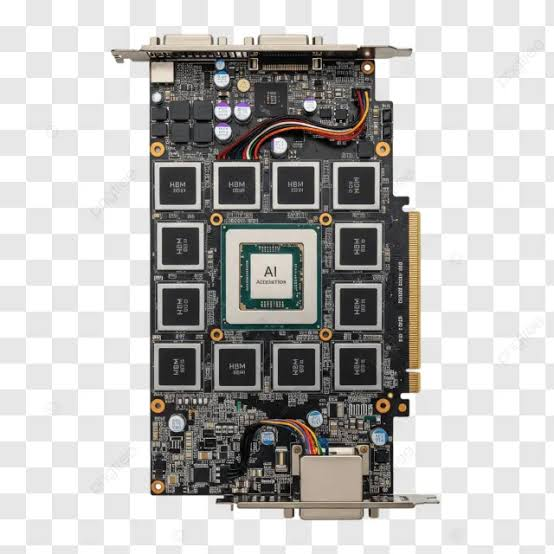
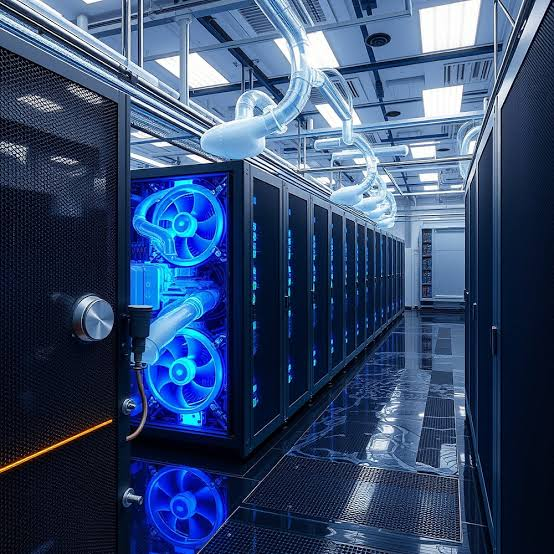

Futurum Equities'in 2027 capex tahmini Wall Street konsensüsünü (Goldman Sachs, Moody's, Dell'Oro ~1T USD) neredeyse ikiye katlıyor. Farkın kökeninde bellek duvarı, HBM üretim firesi ve 1MW/kabin termal kriz var — analist Hasan Kuşcu'nun raporu mercek altında.
Futurum Equities'in 2027 yılı için öngördüğü 2.27 trilyon dolarlık AI veri merkezi yatırım (capex) tahmini, Goldman Sachs, Moody's ve Dell'Oro gibi geleneksel analistlerin 1 trilyon dolar sınırında kaldığı genel kanıyı ezip geçiyor. Fark, zamanlama ve kapsamdan kaynaklanıyor: geleneksel modeller büyümeyi yukarıdan aşağıya ölçerken, Futurum 190 GW'lık kapasiteyi silikon üretim bantlarından veri merkezi inşaatına kadar aşağıdan yukarıya modelliyor.
Yapay zeka donanımlarının önündeki en büyük engel "Bellek Duvarı" (Memory Wall): işlemci çekirdekleri ne kadar hızlı olursa olsun, veri bellekten yavaş taşınırsa sistem tıkanır. HBM (Yüksek Bant Genişlikli Bellek), veriyi yan yana değil dikey katmanlar halinde (3D Stacking) işlemcinin hemen yanına kurarak bunu çözer.

Fiziksel altyapı 386 milyar $ (%17) ile pastanın üçüncü büyük dilimi. Kabin başına güç tüketimi birkaç yıl önce 40kW seviyesindeyken, 2027'de 1MW (Megawatt) sınırını aşacak — bu durum standart klimalı soğutmayı çökertip sektörü sıvı soğutma sistemlerine (Vertiv, Eaton) mecbur bırakıyor.

HBM katmanlarının oluşturduğu termal krizi çözmek için mühendisler yalnızca ısı tahliyesi sağlayan Termal TSV hatları, mikron kalınlığında yüksek iletkenlikli epoksi alt dolgular (NC-GAP), Cold Plate sıvı soğutma blokları ve HBM4 nesliyle gelen 5nm enerji verimli mantık taban çipleri (Logic Base Die) kullanıyor. Soğutma teknolojisini seçin: kaynaktaki basitleştirilmiş termal modele göre (300W GPU yükü, 4 W/mK termal arayüz malzemesi) tahmini çekirdek sıcaklığı:
Ağ ve depolama 431 milyar $ (%19) pay alıyor. Multimodal YZ modelleri eğitilirken geleneksel modellere kıyasla 10–100 kat daha fazla veri tüketiyor. Bu veriyi depolamak için yüksek hızlı SSD'ler ve sunucular arasında sıfır gecikmeli veri aktarımı yapacak Broadcom (AVGO) ve Arista gibi ağ devlerinin optik teknolojilerine devasa yatırımlar yapılıyor.
Futurum'un modeli uç bir senaryo gibi görünse de mantığı sağlam: hyperscaler'ların her çeyrek açıkladığı capex beklentileri sürekli yukarı yönlü güncelleniyor.
| Şirket | 2025 Harcaması | 2026 Beklentisi | 2027 Projeksiyonu |
|---|---|---|---|
| Microsoft | $80B | $190B | $250B |
| Amazon | $150B | $200B | $220B |
| Meta | $40B | $135B | $150B |
| Kaynak | Rol | Bağlantı |
|---|---|---|
| Hasan Kuşcu — Altyapı Raporu Analizi | Orijinal analiz notu, bu yazının incelediği kaynak | — |
| Futurum Equities | 2027 AI veri merkezi capex tahmini ($2.27T) | futurumgroup.com |
| Goldman Sachs / Moody's / Dell'Oro | Konsensüs tahmini (~$1.00T), isim olarak anıldı | — |
| Barclays | 2027–2028 FCF daralma öngörüsü (Meta) | — |